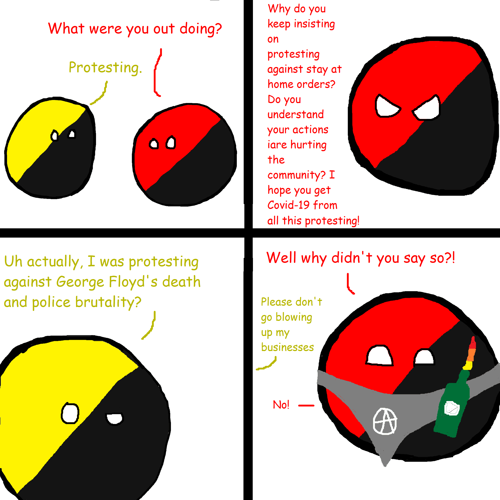

Why Lockdowns Don’t Work
Table of Contents
- 1. Common Sense
- 2. The Original Goal Was To “Flatten The Curve”
- 3. Sweden Was Not Even In The Top 10 Deaths Per Million Countries
- 4. The Lockdowns Were Not Worth It
- 5. Earlier, Stricter Lockdowns Would Not Have Worked Either
- 6. Mask Mandates Don’t Work Either
- 7. The Politician’s Syllogism Fallacy
- 8. The WHO Advised Against Lockdowns For Influenza Pandemics Back In October 2019
- 9. The Hypocrisy Of The George Floyd Protests and Riots
- 10. COVID-19 Isn’t Even That Deadly Or Dangerous
- 11. Notable Mention: Thuletide’s Covid Articles
- 12. Notable Mention: COVID-19 Was Almost Certainly Created In A Lab
NOTE: Keep in mind that all of this was written in mid-to-late-2020, so it needs to be updated for hindsight 2 years later. Some of the stuff that is written here was originally written as replies to other people on the Internet.
1. Common Sense
Recall that all it took to start a worldwide pandemic was just one person, one person who had the virus, but didn’t realize that they had the virus. They spread it to dozens of people who then spread it dozens of people and so on.
Just think about it. This means that if you lock the entire world down, and just one person (realistically probably at least tens of thousands of people, maybe even more) still had the virus after the lockdown was over, that’s all it would take to restart the pandemic after the lockdown ends.
It truly dumbfounds me that some people actually believed that a nationwide or a global lockdown could eradicate the virus from the entire Earth without missing a single asymptomatic person.
2. The Original Goal Was To “Flatten The Curve”
The original goal of the lockdowns was to flatten the curve, or in other words, delay. Initially, everybody thought the healthcare systems would be overwhelmed by the virus. The idea was that if the hospitals and medical system got overwhelmed, then more people would die because there wouldn’t be enough medical staff to treat all the patients. But that didn’t happen anywhere except for Italy and a few parts of Europe during the initial stages of the lockdown. With this mind, the goal was never supposed to be to reduce the number of people infected, and yet here we are…
The area under the flattened curve is exactly the same as the area under the not-flattened curve. This means that in the end, the same number of deaths would have occurred, even if the curve was not flattened (aside from any deaths caused from overwhelming the healthcare systems). The governments knew there be the same number of cases and the same number of deaths once the pandemic was over. We just didn’t want them to all happen at once so they wouldn’t overwhelm the healthcare system and cause unnecessary deaths because people wouldn’t be able to get treatment for other things.
But even after the curve was flattened, it took years for everything go back to normal, even though this could’ve happened just months after the pandemic started, when it was clear that the hospital systems weren’t going to be overwhelmed. Somehow, most people forgot the original purpose of the lockdowns. The media brainwashed everyone into thinking the goal of the lockdowns is: “We must never have a case or death!” This new goal was never feasible or realistic. Elimination was not and never should’ve been the goal.

Once the politicians got their foot in the door, the lockdowns continued on and on, culminating into one of the worst economic recessions in history.
3. Sweden Was Not Even In The Top 10 Deaths Per Million Countries
- Peru. Harsh lockdown.
- Belgium. Harsh lockdown.
- Spain. Harsh lockdown.
- Bolivia. Harsh lockdown.
- Ecuador. Harsh lockdown.
- UK. Lax lockdown.
- Chile. Harsh lockdown.
- Brazil. Extremely lax lockdown.
- Italy. Harsh lockdown.
- USA. Mix of harsh and extremely lax lockdowns.
- Sweden. No lockdown.
- Mexico. Mix of harsh and extremely lax lockdowns.
Clearly, there is no direct correlation between lockdowns and deaths per million. If anything, Sweden’s approach was the best of any country since it enabled them to achieve herd immunity faster than any other country.
4. The Lockdowns Were Not Worth It
Not only were the lockdowns never originally intended to prevent a lower number of infections and deaths in the end, but they were not worth it.
- Was it worth it to end all non-emergency surgeries and treatments?
- Was it worth forcing people back into abusive homes?
- Was it worth forcing lower income kids to go without breakfast and lunch now that they can’t get it from school?
- Was it worth it to end in-person therapy and cause the inevitable suicide spike?
- Was it worth it to stop people from exercising in gyms or parks, letting our obesity epidemic getting even worse?
- Was it worth it to kick renters and mortgage holders out onto the street now that they’ve been laid off and can’t pay their debts?
- Was it worth it to doom an entire generation to one of the worst economic recessions in history?
And yeah, maybe you think you can’t put a price on life. That might be true in fantasyland, but in the real world, yes you can, and yes you should, especially when there is a >99.8% survival rate. That’s how running a functional, civilized society works.
5. Earlier, Stricter Lockdowns Would Not Have Worked Either
As the article says, India imposed a four-stage lockdown that lasted from March 25 to May 31. It lasted over two months with cases steadily rising, and as soon as they entered the fourth phase of the lockdown on May 18, the cases started spiking.
At the time this text was written (2020 June 5), India has the second highest number of reported COVID-19 cases in the world, and the country will probably reach the top of the rankings at the current rate of growth.
If the whole point of the lockdown was to prevent a surge in cases like what is happening now, what good was it? During those two months, millions lost their jobs and starved, and yet some people have the insanity to propose that the lockdown should be extended even though there is no evidence that a spike won’t happen again after the lockdown is lifted.
If cases were going to spike regardless of any lockdown measures taken, everybody would have been better off if there was no lockdown to begin with at all.
Not only that, but India is a country where over 20 million people are infected with tuberculosis and 1.5 million people die from it every year. 3,500 children starve to death in India every single day. It was always madness for a country where this happens regularly to shutdown over a virus which has virtually no excess mortality within the age demographics of India, with its average age of 29 with 65% of the population below the age of 35. The death toll from lockdown will probably be in the millions.
It’s although worth mentioning that Peru has the highest number of excess deaths in the world caused by COVID-19, despite having one of the earliest, strictest lockdowns in the world.
6. Mask Mandates Don’t Work Either
First, the standard disposable masks issued during the pandemic were surgical masks, which are designed to prevent fluids and other substances from entering the respiratory system. Those masks were never designed to prevent pathogens or viruses from spreading.
Second, most masks are not air-tight, so since it’s possible for even a small amount of air to escape without passing through the mask, this defeats the purpose of wearing masks. It thus doesn’t matter whether a mask covers a person’s nose, or if they cover their face anywhere at all.
Since masks create a moist environment around people’s mouths, this creates the perfect breeding ground for bacteria. Masks also make people inhale more of the carbon dioxide that they exhale out, which is unhealthy.
Lastly, the consensus among all studies is that masks do not reduce the transmission of COVID-19, so it’s no wonder why the CDC didn’t have a consistent position on masks, or even why it took them almost a year after March 2020 before they were finally able to cite a questionable study supporting their position.
7. The Politician’s Syllogism Fallacy
The underlying fallacy for motivating the lockdowns and restrictions is the assumption that doing something is always better than doing nothing, regardless of certainty or cost. It’s not specific to COVID or science. Actually it’s better known as the politician’s fallacy:
- Something must be done.
- This is something.
- Therefore, it must be done.
It was originally identified by a comedy show mocking British politics and the civil service, but it’s so obviously true and useful that it’s since become widely known outside the UK.
Something must be done. Lockdowns are something. Therefore, we must lockdown (even if the WHO said back in October 2019 that that would be a really bad idea).
8. The WHO Advised Against Lockdowns For Influenza Pandemics Back In October 2019
9. The Hypocrisy Of The George Floyd Protests and Riots
After months of placing the entire country under quarantine nationwide house arrest, it suddenly became okay to have lots of people crowded together, even if they were less than 6 feet apart from each other as long as it promoted woke activism. These protests and riots defeat the supposed purpose of locking the country down (which never should’ve happened in the first place) by enabling the virus to spread once more. Yet for whatever reason, the United States continued to enforce lockdowns and covid restrictions, even though there wasn’t any evidence of them working.

10. COVID-19 Isn’t Even That Deadly Or Dangerous
If you’re not elderly, obese, or Native American, and you don’t have any pre-existing health conditions, COVID-19 has a >99.8% survival rate, and the majority of the ~0.2% that die from it tend to be older than the median life expectancy in each country.
{kind=link}
And if people think COVID-19 is bad, over a million people die every year due to tuberculosis, but no one in the developed world ever talks about it. While unfortunate, COVID-19 is basically nothing when considering all the other things that kill humans every year. On the other hand, the COVID-19 lockdowns are destroying the economy, and will surely cause a massive economic recession that will set humanity back for at least a decade or two, much like the Great Recession from 2007-2009.
The reason why American Indians had higher death rates from COVID-19 can likely be attributed to race realism.
Read More: Your Chance of Dying from COVID19: The Official Facts (According to the UK Govt) - Thuletide.
11. Notable Mention: Thuletide’s Covid Articles
I discovered Thuletide a few years after the Covid lockdowns started. He has written many great articles on the pandemic and why the lockdowns were a mistake.
12. Notable Mention: COVID-19 Was Almost Certainly Created In A Lab
While this isn’t related to why lockdowns don’t work, it is related to the COVID-19 pandemic, so I’m going to leave a link to Carter Prince’s article on how SARS-CoV-2 Was Probably Leaked from the Wuhan Institute of Virology Research since it’s pretty well-written.